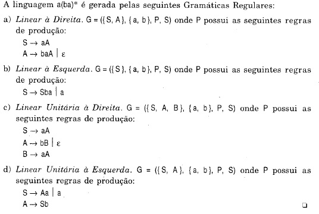

Gramática Regular
Uma linguagem gerada por uma gramática Regular G é representada por L(G) ou GERA(G)
É possível definir uma linguagem formal que pode ser expressa usando expressões regulares, ou seja, uma linguagem produzida utilizando as operações de concatenação, união e fecho de Kleene sobre os elementos de um alfabeto. De acordo com a hierarquia de Chomsky, linguagens regulares são aquelas geradas por gramática regulares
